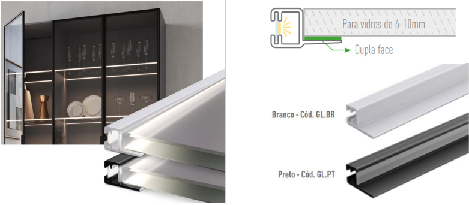

A versão 5.60.24.33 teve as seguintes alterações:
Biblioteca
Linha evidencias:
- Disponibilizada a linha completa exclusividade Leo Sob Medida.
Luminous:
- Led Mínima Light opção para inserção avulsa (sem aplicação da usinagem) na aba Acessórios>Luminus. Editável com dimensão máxima de 3000mm.
Ajustes e correções
Acessorios:
-
Luminária Glass:Novo modelo de luminária nas cores branca e prata, agora com nova lente difusora. A nova lente melhora o efeito contínuo do led ao “lavar” a prateleira de vidro.

Orientações
- Após a atualização, as luminárias existentes nos projetos de cozinhas irão aparecer transparentes, portanto, devem ser desagregadas e agregadas novamente.
- As lojas devem se organizar para executarem as atualizações em suas máquinas para casos de projetos que serão apresentados posteriormente a data da liberação da atualização, isso evitar possíveis erros ou diferenças nos projetos.
- Em caso de inconformidade resultantes da atualização entre em contato com o departamento de engenharia de produtos para solicitar orientações.
A versão 5.60.24.31 teve as seguintes alterações:
Inserção Biblioteca
- Réguas 30MM 1 Bordo / Filete Miranda / Réguas 30MM / Réguas Editáveis
- Inserção de novas orientações
- Novas funcionalidades.
Ajustes e correções
- Canto Articulado Direito / Paileo Editavel
- Canto: Ajuste na caixa, travessa interna
A versão 5.60.24.26 introduziu melhorias:
Novas cores disponíveis
- Ginduia Velutto
- Linho Belga
- Off White Suave